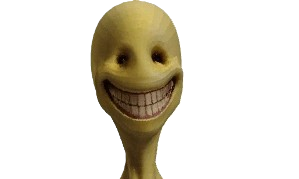

A Verity első találkozáskor egy apró, lebegő sárga gömbként jelenik meg. Kedves, segítőkész, kíváncsi. Bemutatkozik, viccelődik, kérdez, és felajánlja, hogy segít a túlélésben.
A történet szerint Verity már jóval a játékos érkezése előtt létezett. Saját elmondása szerint közel száz éve "létezik", de nem mindig ugyanabban a világban.
Verity nem támad azonnal. Inkább megismeri a játékost.
A Verity Demonként emlegetett forma Verity sötét oldala. Ilyenkor megváltozik a viselkedése.
A legtöbb utalás alapján Verity kapcsolatot akar kialakítani a játékossal, de valami veszélyes dolog rejtőzik benne.
